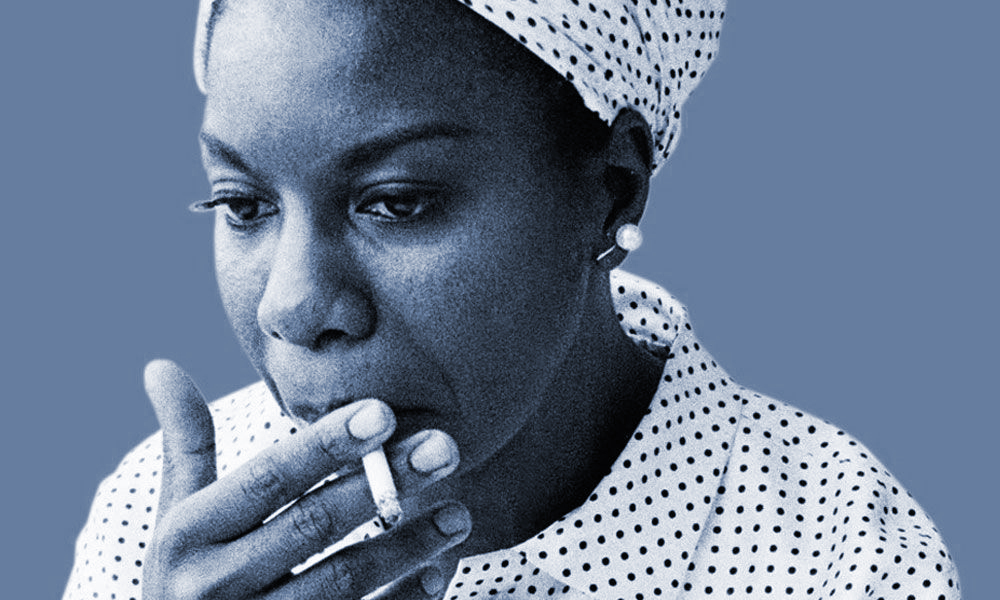

Nina Simone
Posted on July 14, 2017

One of the most influential recording artists of all time, Simone possessed a magnificent intensity that turns everything, even the most simple mundane phrase or lyric into a radiant poetic message.